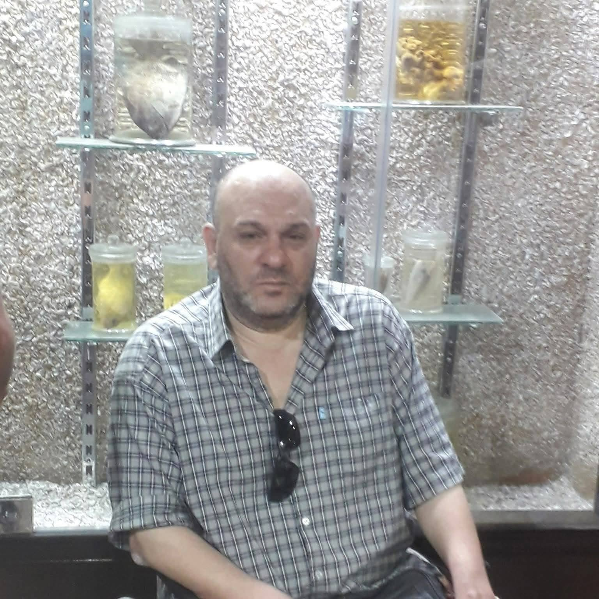

صدقة جارية عن روح فقيدنا الغالي(عادل شندي محمد ابودقة) - نسألكم الدعاء له بالرحمة والمغفرة

"إِنَّمَا يُوَفَّى الصَّابِرُونَ أَجْرَهُم بِغَيْرِ حِسَابٍ"
"ادعوا له اليوم سراً علّ الله يسخر لكم من يدعو لكم بعد رحيلكم.. فالدعاء للميت دَينٌ مسترد، وما تزرعونه في قبور غيركم اليوم، ستحصدونه في قبوركم غداً."
1. اللهم اجعل كل ألمٍ أصابه في مرضه كفارةً لسيئاته ورفعاً لدرجاته في الجنة.
2. اللهم أبدله بفراش المرض فراشاً من سندس واستبرق في أعلى الجنان.
3. اللهم إن جَسده قد ضَعف وصبر على البلاء، فاجعل جزاء صبره جنةً عَرْضها السماوات والأرض.
4. اللهم اغسله من ذنوبه بساعات الألم التي قضاها، واجعلها طهوراً ونوراً لقبره.
5. اللهم إن مرضه كان تطهيراً له، فاحشره اليوم مع الصابرين الموفين أجورهم.
6. اللهم عوض شبابه وأيامه التي سلبها المرض بمقعد صدقٍ عند مليك مقتدر.
7. اللهم إن ألم المرض قد انتهى، وبقيت رحمتك التي لا تنتهي، فارحم ضعفه ووحدته.
8. اللهم اجعل الأنين الذي أنّه في مرضه تسبيحاً وذكراً يرفع مقامه في عليين.
9. اللهم كما حرمته العافية في الدنيا صبراً واحتساباً، فلا تحرمه لذة النظر لوجهك الكريم.
10. اللهم إنك ابتليته فصبر، فاجعل ليل مرضه الطويل ضياءً ونوراً ممتداً في قبره.
11. اللهم ابعثه برائحة المسك، وضياء الفجر، وضمان العفو والرضوان.
12. اللهم اجعل مرضه حجاباً بينه وبين النار، وسبباً لدفء قبره وأمانه.
13. اللهم انقل من ضيق الوجع والأنفاس إلى سعة خلود الجنان وعيشها الرغيد.
14. اللهم اكتبه من الشهداء، فإن المبطون والمصعوق وصاحب الهدم والألم شهيد.
15. اللهم ارحم جسداً نحل، وعظاماً وهنت في سبيل مواجهة المرض، وجازه بالإحسان إحساناً.
16. اللهم سكن وجعه في بطن الأرض، وآنس وحشته، واجعل روحه في سدر مخضود.
17. اللهم يسر حسابه كما كان صابراً على بلائه، وتجاوز عنه بحلمك يا رحيم.
18. اللهم اجعل كل شربة دواء تجرعها في مرضه شربةً هنيةً من حوض نبيك لا يظمأ بعدها.
19. اللهم إن رحمتك سبقت عذابك، فامنحه الطمأنينة الكاملة والسكينة في مرقده.
20. اللهم ارزقه شفاء الروح والجسد في برزخك، وافتح له باباً إلى الجنة لا يغلق.
21. اللهم اغفر له وارحمه، وعافه واعف عنه، وأكرم نزله، ووسع مدخله.
22. اللهم نقّه من الخطايا كما ينقى الثوب الأبيض من الدنس.
23. اللهم آنس وحشته، وآنس في القبر غربته، واجعل قبره مناراً من نورك.
24. اللهم اجعل قبره روضة من رياض الجنة، ولا تجعله حفرة من حفر النيران.
25. اللهم املأ قبره بالرضا، والنور، والفسحة، والسرور.
26. اللهم إنه في ذمتك وحبل جوارك، فقِهِ فتنة القبر، وعذاب النار.
27. اللهم أمّنه من فزع يوم القيامة، ومن هول يوم القيامة، واجعل نفسه آمنة مطمئنة.
28. اللهم ارزقه الفردوس الأعلى من الجنة بغير حساب ولا سابقة عذاب.
29. اللهم اجمعه مع النبيين والصديقين والشهداء والصالحين في جنات النعيم.
30. اللهم يمن كتابه، ويسر حسابه، وثقل بالحسنات ميزانه، وثبت على الصراط أقدامه.
31. اللهم اسقه من حوض نبيك محمد ﷺ شربة هنيئة مريئة لا يظمأ بعدها أبداً.
32. اللهم ابنِ له بيتاً في الجنة، واجعل ذلك البيت مزاراً لملائكتك بالرحمة.
33. اللهم ارفع درجته في المهديين، واخلفه في عقبه في الغابرين، واغفر لنا وله يا رب.
34. اللهم اجعل عن يمينه نوراً، وعن شماله نوراً، ومن فوقه نوراً، ومن تحته نوراً.
35. اللهم إن كان محسناً فزد في حسناته، وإن كان مسيئاً فتجاوز عن سيئاته.
36. اللهم انظر إليه نظرة رضا، فإن من تنظر إليه نظرة رضا لا تعذبه أبداً.
37. اللهم أسكنه فسيح الجنان، واغفر له يا رحمن، وارحمه يا رحيم.
38. اللهم هب له من لدنك رحمة ومغفرة واسعة تبلغه بها أعلى درجات عفوك.
39. اللهم اجعل أعماله الصالحة في الدنيا أنيساً جليساً له في قبره ومؤنساً لوحشته.
40. اللهم تقبل منا هذا العمل وهذا الدعاء واجعله صدقة جارية تصله وتنير ظلمته.